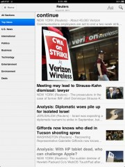

I approve of this sort of thing.
Welcome to AboutHalf
Amazon recently made newspapers and magazines available for a wider array of Kindle apps, including the Kindle app for iPad (but curiously, not for iPhone). They have even included a very Apple-like promotional video which shows off the user interface. Currently there are about 170 periodicals available in this program. I imagine more will follow as more publishers adapt to the newish format1. Clicking the big fancy graphic, for the moment, sends you to a selection of titles available on multiple devices. Among the titles available are Reuters, The Economist, and my old home town’s newspaper The Charlotte Observer2. There’s a bunch of junk, too.
I’m currently trying out a trial subscription for Reuters. Purchasing a subscription works just like buying anything else from Amazon’s Kindle store. You find what you want and click the “send to my device” button. The download is nearly instant. By the time I clicked through the shopping cart on Amazon, woke my iPad, and opened the Kindle app, today’s issue of Reuters was already there. Downloading a copy of Vanity Fair or Editions by Aol looks absolutely silly by comparison.

Simple navigation
The current edition appears on your Kindle app’s home screen, previous editions appear in an automatically generated folder. You can archive old issues and restore archived issues from your archived items at any time. Each edition has a simple UI. Each edition has main “contents” page which has a menu of sections or categories on the left with headlines and summaries on the right. The default view is “All sections” which allows you to scroll through all headlines in all sections. Selecting a section on the left filters this view.

Portrait reading view
Landscape reading view
Selecting a story loads the reading view, which is very similar to the standard Kindle reading view. Articles are rendered in a two column reading view in portrait orientation and three columns in landscape. This is configurable with onscreen tools (just like reading books in the Kindle app, you tap the screen once to bring up the controls).

You know you love the Kardashians

Zoomed in on the celebutant
The reading experience of the Kindle app is far better than the iBooks app. Kindle doesn’t have superfluous animation or skeuomorphic book chrome – the display is minimal and focuses on the text you’re reading. Hopefully, someday soon, iBooks will follow suit and let you turn all that extraneous junk off. Some articles have an image attached. You can zoom in on an image with standard pinch-out gestures, just like you might in a Kindle book with illustrations or photos.
Implications for other iPad magazine apps
Kindle eBooks and publications are based on the Mobipocket format which – like ePub – is an extension of plain old HTML. The download speed, readability, and multi-platform compatibility of these Kindle editions is super. The Kindle app doesn’t seem to support multimedia features – but I’m not sure that’s a problem. People read text with pictures all day, every day, in some format or another, without the need for slideshows or interactive features.
What could be a problem for big publishers, like Conde Nast, is sharing identity and brand with Amazon. The Economist doesn’t seem to have a problem with this – as they publish both an iPad app and a Kindle edition for iPad. But I don’t know if I can imagine Vanity Fair Kindle Edition.
However. I could see publishing your magazine in ePub or Mobipocket format and skipping the entire Adobe Digital Publishing clusterfuffle. Why not wrap your own ePubs or Mobis in a nicely branded reader application – interactive features could be loaded in a standard WebKit view. Also? Your editions would download in a fraction of the time of a 450MB stack of PNG files.
the risotto thickens
My wife’s friend married a Moroccan man. This friend was just visiting Morocco and brought me back a tiny bundle of saffron.
It’s the strongest saffron I’ve ever had. Incredible.
Instead of packaging in a little jar or a tiny zipper bag, the saffron was wrapped in old office paper. The paper was folded over itself making a tight little bundle. When I unrolled the packet, the bottom of the page reads “Confidentiel Société”.
Curiouser and curiouser. Clearly I’ve uncovered an international plot. The only way to wrap this up is to gather all the suspects for a risotto dinner.
Mares eat oats. Does eat oats. Little lambs eat sammiches on oat bread.
Future toast
Ingredients
- 1.5 oz rolled oats (about 1/2 cup) plus additional handful of oats to coat the loaf
- 18.5 oz flour (3 full cups, one shy cup)
- 8oz water (for the oats)
- 4oz water (for the rest)
- 1tsp active dry yeast
- 2tsp salt
- 1 tbsp olive oil
- 1 tbsp honey
How to
Dissolve yeast into 4oz water. Stir in the tablespoon of honey and set aside. Prepare the 1.5oz of rolled oats with 8oz of water according to package directions – I microwave oats and water for 3 minutes at medium-high power. Allow oats to cool to room temperature. If the oats are too hot, they will kill the yeast.
In a large bowl mix flour and salt. Add the olive oil. Once the oats have cooled, add them to the flour mixture, then add the water/yeast/honey mixture. Stir this until it begins to come together into a loose dough. Turn the dough out onto a work surface and knead for approximately five minutes or until it passes a membrane test. This dough will be sticky at first, but it will come together after kneading.
Once the dough is kneaded, place the dough into a covered bowl and let it rise for about 2 hours. After the dough has doubled in size, turn it out onto a work surface “dusted” or scattered with dry oats. The oats will stick to the surface and be purty. Form the dough into a loaf, and roll it through any remaining oats. Place the loaf on parchment, a baking sheet, or otherwise oven-transferable surface and let rise for another two hours.
During the last hour of rising, set the oven to 450º F to pre-heat. Place an oven proof skillet or pan on the bottom rack a few ounces of water. Once the rising is complete, transfer the loaf to the oven. Turn the oven down to 400º F and let bake for 40 minutes.
Bonus round
Before putting a loaf of bread in the oven, it’s a good idea to slash the top of the loaf with a knife or a razor blade. This allows the bread to expand in the oven in a predictable fashion. Otherwise, one side will split open and your loaf will be wonky.
I like to bake bread on top of a heavy cast iron skillet or a heavy enameled cast iron casserole. I use the skillet for round boules or oval loaves, the casserole for longer loaves or baguettes. I usually place these upside down in the oven, and slide the loaf on top (so the loaf has a big flat surface to rest on). These heavy pans work just like a baking stone or a pizza stone, except that a pizza stone is a $50 rock1, and I can do other stuff with my skillet.
-
Sure, it’s a nice rock. But it’s just a rock. ↩
I found this in my junk mail. How did they know my secret identity? Uncanny.
I’ve been doing a little work at home with jQuery and jQuery Mobile recently; at the jobby job we use ExtJS widgets and components. Comparing the two has me thinking. Each of these javascript libraries represents a different philosophical approach to developing web applications.
jQuery Mobile is an extension of the jQuery library, and similarly Ext JS components are based on the Ext Core library. Both core libraries do similar things. They normalize browser differences in event handling and XmlHttp request implementations; they add to or extend the core browser document object model; they provide a means to create custom events and subscribe to these events with handlers; and they provide an API to create custom components or plugins. They approach things slightly differently. jQuery focuses on a xpath/CSS selector based API for working with DOM elements. Ext has this feature too, but also creates some base classes to supplement javascript’s core objects. Ext1 also extends some of the core javascript objects (like String and Array) to provide additional functionality. Beyond this though, the libraries diverge.
Ext is component based. The goal of the library is to provide the developer with reusable application components that can be wired up with data access objects which, to a certain degree, simulate a database or an object store in javascript. The dataobjects are configured to communicate with your server application via XmlHttp request. This approach is also used by libraries like Sproutcore. Components include toolbars, forms, various navigational tools, panels, modals, dialogs, charts, etc. The components can be used independently on a given HTML page, but they are often brought together into a complete application that works much like a desktop application that lives in a browser. The default themes provided with Ext look very much like a Windows XP era desktop application.
jQuery has some ui components as well, but the scope is limited. jQuery UI basically extends HTML with a few extra niceties like date picking components, tabbed navigation, sliding selectors (imagine a volume control) and so on. These components aren’t really designed to be bolted together into an application. Instead they enhance an existing HTML interface. This underscores the differences in philosophy.
I think of jQuery’s approach as an enhanced, interactive document approach – where each web page is just that, a page of information. The page can be used (or at least read) without javascript enabled and, more importantly, be discovered and interpreted by search engines. Netflix.com is a good example of this pattern.
Ext embraces an application approach. The web page, the HTML document, is a host for a complete software application written in javascript2. The application doesn’t function (or even exist) if the browser doesn’t have javascript enabled. The application is effectively invisible to search engines. Gmail is a good example of this kind of application, so are Apple’s old Mobile Me applications (soon to be replaced with iCloud apps, I suppose).
These approaches can be combined. Google+ and Facebook have document centric “core” functionality like news feeds, but advanced features like “chat” and contact management are application-like modules that are welded onto the document base.
Combined or not though, I think these are the two ways of thinking about client side architecture of web applications. Each method has its tradeoffs.
The enhanced document approach
You get
- Search engine visibility, and likewise the possibility to support older browsers or javascript disabled or inhibited browsers
- Separation of concerns: The design and HTML/CSS implementation of that design can be largely, if not completely, separated from the interactivity
- Complete design control
- Shallow learning curve
- The ability to create a simple page/application first, then add features as they are discovered or needed.
- Lightweight JS and interaction model – for example a simple web page can be made highly interactive with a small amount of custom JS supported jQuery. The full Ext library is rather large.
You lose
- Enhanced interactivity. Powerful widgets like data grids and the like must either be manually integrated, built custom, or done without.
- Speed of prototyping and development. With a toolkit like Ext or Sproutcore, there’s probably already a widget that’s pretty close to what you need. The widget might be used as-is in a prototype, and extended for the real application.
The application approach
You get
- Speed of prototyping and development
- A reasonably good look and feel (if not UI design) “out of the box”
- Advanced features that resemble “real” desktop software (this can be very important in, say, a corporate setting)
- Easier division of server side and client side development. For example, an Ext developer can build an entire application powered by dummy JSON data, while the Java developer builds out a RESTful server application to support it. They only need to agree on the data api.
You lose
- Time due to high learning curve
- Design flexibility
- Integration of legacy or third party client side components may be difficult or impossible.
- Search engine visibility
- Libraries, components, and custom javascript tend to be large and complex with these sorts of applications
- Performance can be poor on slower machines
I imagine a seasoned jQuery developer reading this and thinking “but I just downloaded a data grid plugin for jQuery…”; there’s an Ext developer somewhere thinking “I just wrote my fifth custom Ext theme, it’s not that big of a deal…”. All true. These lists are just big executive level3 ways of thinking about the two approaches.
The next time I have to make a big decision about which approach to take with some new development, I’ll probably use this list (or a list like it) as my guide. The next time I have to convince a room full of wolves developers to take an approach, I’ll definitely make a big list on a big white board.
I’m working on a small personal project now in which I’m taking the enhanced document approach. This approach has allowed me to work pretty quickly by banging out the required features using standard HTTP type web application methods (forms, links, and redirects) while planning for more advanced features down the road. Also, because I’m forced somewhat to keep things simple, it’s allowing me to target desktop browsers and mobile browsers at more or less the same time (because I completely control the design) which is pretty cool too.
It’s iPhone in a bowl.
Use Bowl™’s natural bowl-like curvature to amplify the sound from your iPhone or iPod Touch without batteries or an external power supply.
{kind=link}
Do you want to listen to the dulcet tones of John Gruber while relaxing in the tub?
iPhone in a bowl.
On the deck
Sipping wine on the porch while listening to NPR streaming over the internet?
iPhone in a bowl.
At a party
Hosting a small, intimite dinner party? Want to play some smooth jazz while entertaining your guests?
iPhone in a bowl.
What’s iPhone in a bowl?
- iPhone in a bowl is green1
- iPhone in a bowl is portable
- iPhone in a bowl is available in many colors
- iPhone in a bowl is already in your own home
- Best of all it’s free!2
iPhone in a bowl is available for:
- iPhone 4
- iPhone 3GS and iPhone 3G
- Original iPhone
- iPod Touch
iPhone in a bowl is not available for Android3
Editions by AOL is a news “magazine” app for the iPad which attempts to learn your reading habits in order to create an automatically generated, curated, collection of articles from various sources on the web. The collection process happens each day by default and can be configured to alert you with a push notification. The collection and download process only take a few minutes over WiFi.
Editions will integrate somewhat with your Facebook account and your iCal calendar to present a quick “week ahead” view in each edition. This is an odd feature and it seems tacked on. Facebook junkies will simply go to Facebook before loading some other app. Likewise, if someone actively schedules their life with the calendar app, they’ll open that before reading the news. I believe the idea is to have each digital magazine seem as if it were made just for me, as if a publisher went to the trouble of personalizing a print magazine for me. It doesn’t come across that way though. The app is just reading the calendar database and hitting Facebook’s api. This is not welcome nor useful. The app also supports sharing links to articles via Facebook, Twitter, etc. as you would expect.
The app is very similar to Flipboard in terms of layout, design, and function. Like “lawsuit” similar. Articles are algorithmically laid out into boxes with headlines, and an image from an article is dropped onto the page. The app is handsome, but the “it looks just like a magazine, but it’s digital!” design approach is tiresome.
{kind=link}
Curation
When you first launch the app you customize the look of the “magazine” by choosing a masthead color, default sections to appear in your magazine, and font size. Then the app builds up a collection of article links, summaries, and headlines including some images from each source. Most articles are a summary with a tappable headline which links to the main article in an in-app web view (more on this later). Some articles are “features” which means the full article is available in-app to read. Both linked summaries and full articles may be shared or curated.
Launching the full web view of a feature article or summary reveals a curation toolbar above the web page. The toolbar has these sort of clickable “tag” widgets – very much like how some blogs “tag” posts with single word descriptors which link up similar posts. Each tag widget has a check mark (I like this) and an X button (I don’t like this). Clicking the check tells the app “more like this please” and clicking the X tells the app “no thank you”. These ‘votes’ are considered the next time the app auto generates an edition. These features seem to work well, as I’ve seen no more articles about that British woman named Kate and the boy she’s marrying.
{kind=link}
In addition to topic tags, the source of the article (e.g. the website) can be checked or X’ed and similarly the app will either ignore that source in the future or include more from that source in the future.
Reading experience
Browsing through a magazine within the app works well enough. Swiping between pages is responsive. Tapping a persistent tab at the bottom of the screen reveals controls and settings. Two navigation controls allow browsing quickly between sections and articles. The application only supports portrait orientation, which I think is fine for a reading focused app. Most reading apps with a landscape orientation have a wonky two or three column layout that is not well suited for reading.
Edition’s featured articles have a strange user interface. Instead of breaking the article over several virtual pages, the article has a sub-window which holds the full text of the article. If you swipe left and right on the text, the article advances a ‘sub page’ – if you swipe left and right on the title of the article, the page changes. If you are swiping sub-pages, and reach the end of the sub-pages, then the page changes. This is more than a little awkward. You can be paging through the application, only to find yourself “stuck” on a feature article.
{kind=link}
Linked article summaries open in a web view with curation controls, as I mentioned above. This works reasonably well, though the animation of the controls (opening and closing the “drawer” the sit on) is sluggish to move and slow to respond. The web view sits under this drawer. Even when closed the web page feels cramped and too small.
Clicking links within this web view opens yet another web view on top of this web view, this time with a thin black control bar. If you tap “Close” both web views are closed and you return to the magazine page you were on. If you tap the “back” button, the original web page opens in the new web view. Basically if you click a link in an article, there’s no way to get back to the curated web view without starting over.

What do I do here?
{kind=link}
Compare this to the simple inline web view in an app like Reeder. It’s clear in Reeder which control takes you back to your RSS feed, which controls navigates the web pages you are currently viewing, and which controls take you out of the app. Partly this is because Reeder uses more standard iPad controls, so it’s more consistent with other apps on the device. But more so it is because the controls are just laid out clearly intelligently (e.g. the ‘return to rss feed arrow’ is on the left, closest to where you came from).
Conclusions
Meh.
This app suffers from the same problems as most magazine apps have. Wonky navigation, slavish devotion to simulating a paper magazine, and bolted on ‘interactive’ features. There are some steps in the right direction though. The relatively small download size is welcome. Compared to a Kindle or iBooks eBook, it’s still painfully slow, but it’s far better than the 400MB mega magazines from Conde Naste. Since all the text is gathered from the web and not a digital picture of text, it’s generally responsive and fast. For some reason they’ve disabled text selection in ‘browse’ view, but you can select and copy text when viewing an article in the inline web view.
I haven’t done enough reading to honestly say how well the curation feature will work long term – but I think it’s a smart idea and has potential. One of the accidental features of a real magazine or newspaper is the serendipitous opportunity to stumble into an article or topic you might not have otherwise. The way this app goes out and finds stuff for you to read brings that opportunity to web browsing, and that’s interesting. But I don’t know if it’s better than following a community website like Metafilter or Reddit where random contributors contribute randomly (brought to you by infinite internet monkey solutions).
There seems to be no way to delete editions after they are downloaded. I’ve used the app off and on for four days, and I have four ‘editions’. I’m not sure if the app automatically deletes them after a while or if they just continue to pile up. Does it stop at 7? 30? Never? Will my iPad eventually only contain Editions by Aol?
The app is a free download; the content is free; one can only assume they will start filling the app with advertising or selling user’s browsing data and zip code to marketers.
Editions is a Flipboard knock-off that doesn’t work as well as Flipboard nor does it replace an RSS app. It gets in the way of reading the web more than it encourages it. It’s possible that over time their curation algorithm will become fantastic and it will be worth a second look.
Fantastic photos from the In Focus blog
World War II: The American Home Front in Color – Alan Taylor – In Focus – The Atlantic.
My wife and I spent a Saturday at Cannon Beach for her birthday.
Cheap red wine in a cheap plastic cup
Tending the campfire
Sunset
Sundown
Hot dogs, campfires, cheap wine, and free parking.